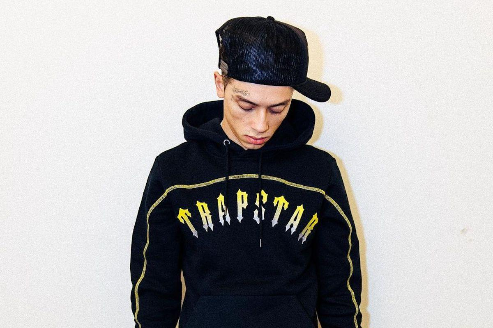

Central Cee
Main stage - Zondag - 25/7
Central Cee is een Britse rapper en songwriter die bekend staat om zijn unieke stijl en pakkende teksten. Geboren en getogen in Londen, heeft Central Cee met zijn muziek een breed publiek weten te bereiken. Zijn nummers weerspiegelen vaak persoonlijke ervaringen en vertellen verhalen over het leven op straat en zijn persoonlijke groei.